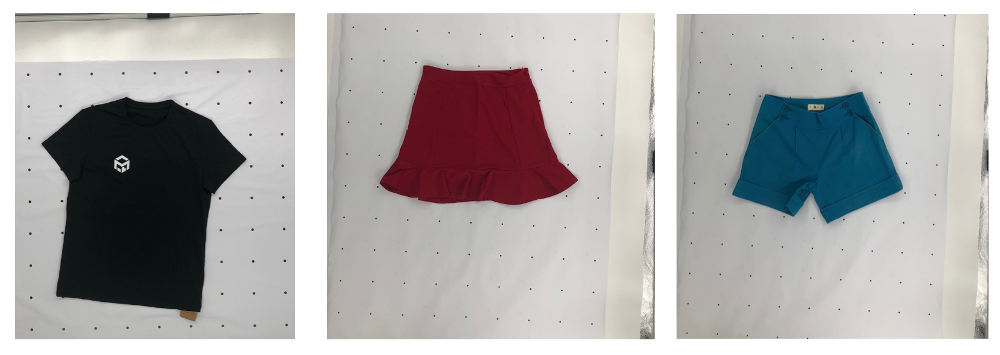
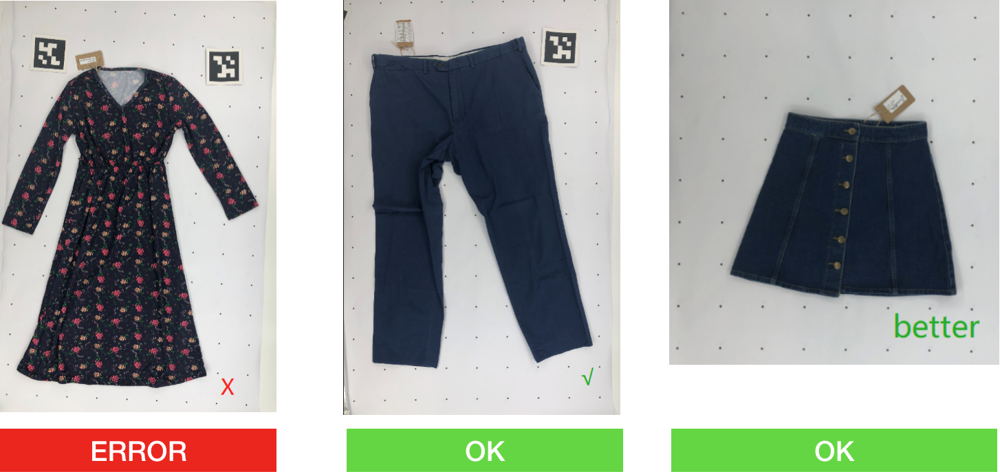

MeasureAI User Guide
Requirements
- MeasureAI Account
- MeasureKit Background Mat
Contact our sales representative for a free trial to receive an account and MeasureKit demo.
Getting Started
MeasureAI supports taking photos via mobile smartphone, or with a desktop or laptop PC.
The clothing should be laid flat on the MeasureKit background mat, with smartphone or USB webcam placed directly above the clothing.
For best results, the photo should capture the full clothing, as close as possible.

Mobile
MeasureAI can be used with any modern smartphone. Just login to MeasureAI from your smartphone device.
- Lay Background Mat on a flat surface. It's easiest to place this on the floor. Place clothing on top of the Background Mat. See Taking Photos for correct placement.
- Login to MeasureAI from your device.
- Tap
Upload Phototo take a picture with your smartphone. - Click
Submitand wait for MeasureAI to return results.
Laptop or Desktop PC
MeasureKit comes with a USB Webcam, and camera stand for using with a desktop or laptop PC.
- Plug USB Webcam into a Windows PC or Mac OSX system.
- See MeasureKit for setup instructions.
- Lay Background Mat on a flat surface. It's easiest to place this on the floor. Place clothing on top of the Background Mat. See Taking Photos for correct placement.
- Login to MeasureAI from your device.
- Click
Take Phototo take a picture with USB Webcam. - Click
Submitand wait for MeasureAI to return results.
Taking Photos
Placement
When taking photo, try to keep 1 clear line of dot on each side of the garment

More Examples
Sleeves
Sometimes the sleeves can obscure part of the clothing, especially where the chest or body width is measured.
Expose the body width points, and lay the whole sleeves flat as shown in the examples below.

Trousers
Sometimes the crotch point can obscure part of the clothing, leading to inaacurate inseam and length measurements.
Expose the crotch point, and lay the whole trousers flat as shown in the example below.
Things to Avoid
Don't fold sleeves

Don't wrinkle clothing
TIP: Try ironing or steaming the clothing to make it flat.